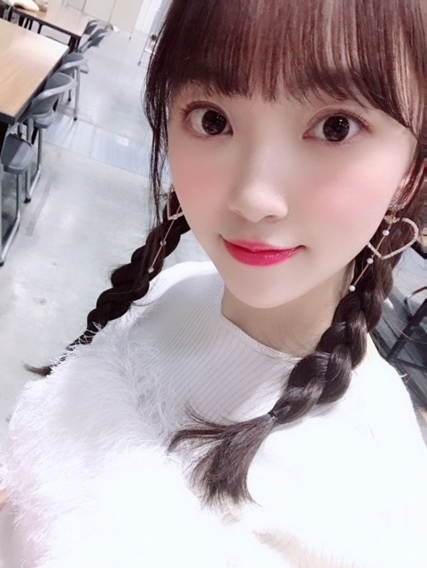
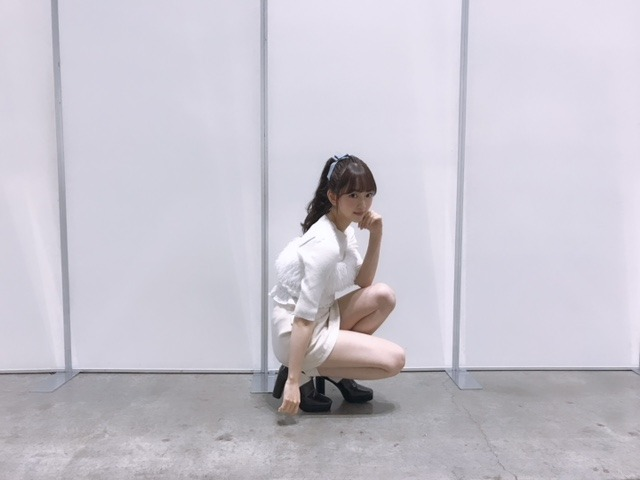
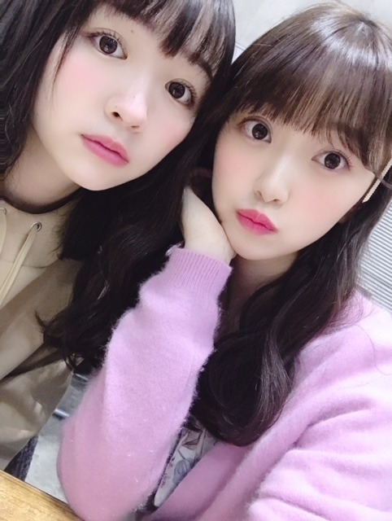
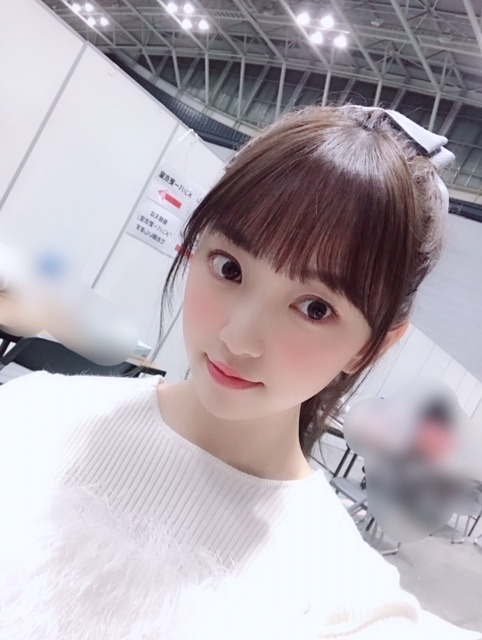

2019/0116Wedいちごいろ
こんにちは☺︎

一昨日の握手会では久しぶりに
三つ編みをしてみました
握手会に来てくださった皆さん、
そしてらじらー！
聴いてくださった皆さん、
ありがとうございました✨
カーディガンは仲良しのメイクさんに
いただいたSNIDELのカーディガン！
紫色好きだからたくさん着てます☺︎
中には韓国で買った花柄のブラウス
スカートと靴はどこのか不明です(-.-;)

中のニットはSNIDELで
重ね着してるキャミはリリーブラウンです〜
握手会で最近お気に入りのコスメを聞かれたので
ちょびっとだけ紹介します
最近は(11月終わりくらいかな)
イプサのアイシャドウ(デザイニングアイシェード05)とファンデーション(ファウンデイションアルティメイト100)とザ・タイムRリップエッセンス
新しく買いました
年末の歌番組は全部イプサのファンデでした！
あとは髪型や衣装に合わせてアイメイクや
リップの色も変えてます

この時の巻き方は
波みたいなウェーブ巻きで
ストレートアイロンで内外で繰り返し波みたいに巻いて毛先をコテで内巻きに1カールさせてます☺︎
カーディガンの色に合わせて同じ色の
フーミー (キラメキアイシャドウスミレ3)も
まぶたに広く塗ってるよ✨
メイクは季節やテーマごとに変えて楽しめるし
自分に合うメイクで整形に頼らず
いかに自分がなりたい自分に
近づけるかだと思っているので
これからも女の子として
メイクは楽しみつつ追求していきたいです✨
もちろんドラマや映画などの映像作品ではほぼすっぴんのナチュラルメイクだったり役にあったメイクをしていくけれど、プライベートや歌番組では自分でしたいメイクをしていきたい！
いまは
CHICCAのチークとリップスティックが
気になっていて...
売り切れが多いので絶賛探し中です☺︎
早く使いたいな〜

今年のメイクキーワードは
#ふわふわチーク
#ぷるツヤ肌
#キラキラまぶた
にするんだ✨✨
女の子寄りのぶろぐになっちゃったけど
男子のみなさん！！
あ、女の子も！
おすすめの"ポジティブになれる"
"感動する"
"勇気付けられる"
いい本があったら教えてください！
今年は映画と漫画だけじゃなく
本も色々読みたい
では☺︎


コメント(535)
すき！♡
髪色もステキ！！
みおちゃんの髪型全部可愛かったよー
三つ編みよかったよ～
髪下ろしてるのも好きだし、色々試してみるのもいいかもね
ポニーテールとかも～
可能性が広がるね～(笑)
さて、クレームブリュレ会の"あの"件、ありがとうね～。
まだまだ絢音ちゃんには秘密だよ？(笑)
今週いっぱいはね～
ちゃんと最後までやり遂げます( *˙ω˙*)و ｸﾞｯ!
今週末の握手会も、ちょこっとだけ顔出します。
よろしくね～
#プリン会最高かよ
ではでは会長、体調にはお気をつけて。
またね✋
てんちょ
君に恋をするなんてありえないはずだった
オススメです！！！初めて学校の図書館で借りました（笑）
また気が向いたら行きますw
しんちゃん
らじらー楽しかったです。未央奈の才能や可愛さが光ってました！
感動系、勇気系とは違うジャンルを読んでいるのでおすすめは分からないんてますけど、読書をすると様々な知識も得られるし、人間としても成長できるので小説自体がおススメです！
今日のレコメン聴きます！
これからも応援しています！
陽だまりの彼女
余命10年
オススメだよ！！
私は、
・きらめきのライオンボーイ
・ショートケーキケーキ
っていう漫画がオススメです٩(*´︶`*)۶
絵がとっても可愛くて幸せな気持ちになれます。
これからも頑張って！
大好きです٩(*´︶`*)۶
20日個別握手会に会いに行くねー
堀ちゃん、大好きだよー
いきなり、なんですけどなんかいいメンズの服とかあったら教えてください！(高校生で学校に来ていく服です。)
僕がオススメする本は重松清さんの「赤ヘル1975」です！この本は、広島カープの初期からのことを広島の街全体を通していろんな視点から教えてくれます！僕も読んだ時言葉に表せないような感情を得ました！是非読んでみてください！
体調に気を付けて頑張ってください
応援してます
ショート見たくなってきた！
「君が踊る、夏」、感動する！し、高知弁が良い◎
衣装の上か下
どっちか必ず白い
写真が多くて嬉しいです♡
大好きすぎる
メイクのこといっぱいしれて楽しいー！
握手会ありがとう！
超楽しかったよ～。
握手券に余裕があったので2枚はサイン入りポスターと交換した！
20日は数枚しかないけど行きます！
楽しみです！
おすすめの本？
俺、全く小説読まないんだ、、、
理系の参考書しかない、、、
強いて言うなら‘ブラックホールと時空の方程式 15歳からの一般相対論’がおすすめ。
レコメンでたまにノリさんが言ってる、相対性理論の話です。
この世界って当たり前だと思ってることが、全くそうじゃないことがあるんだよね。
壮大な話になるけど、世界の見え方が変わります笑
もしかしたらポジティブになれるかも笑
うわぁ、何かジコチューなコメント書いちゃってるね、、、
この辺でやめときます笑
本好きなら｢図書館戦争｣もオススメ！
最近読んだ中でおもしろかったのは｢プロパガンダゲーム｣！
今度、堀ちゃんが読んだおすすめ本も教えてー！
個握の私服とても可愛いです。
自分はいけないけれど見守っています。
明日も頑張って下さい。
いつものだじゃれを言って終わりたいと思います。
堀さん堀川(堀河)にいってみたら？。
堀川とは京都市街のほぼ中央を南流する川
私は映画化もしたけど”くちびるに歌を”が1番感動したかな！！
映画と設定も違うし面白いからぜひ~( ´͈ ᵕ `͈ )
みつあみ可愛いねっ( ' ' )
お仕事頑張ってね！ふぁいと！
この本が感動できてオススメです！
オシャレで可愛い！
本はあまり読まないからおすすめできる本は少ないけど、おすすめするなら指揮者の佐渡裕さんが書いた「僕はいかにして指揮者になったのか」という本が面白いです。京都出身の普通の少年が世界的指揮者になるまでの道程が面白く綴られています。是非読んでみてね。
"感動する本"
「友情」 武者小路実篤
時代を感じさせない青春恋愛小説です。
「耳をすませば」が好きだと、通じるものがあるかも
"ポジティブになれる本"
「禅 シンプル生活のすすめ」 升野俊明
自分が20代の時、悩み苦しかったときに何度も読み返して、救ってくれた本です。
どちらもすぐ読めてオススメです
一昨日の握手会行きました！
三つ編みめっちゃ可愛いです！
誕生日祝って貰ってめっちゃ嬉しかったです！
そういやSHAREEFのセールで買った靴とシャツたまたま紫やった（笑）
春休みに物語シリーズの本読みまくろうかと思ってたからタイムリーなブログきた。逆に未央奈のオススメの本知りたい！
ブログ更新ありがとう
握手会お疲れ様でした
私服かわいいね
モデルのお仕事
嬉しいね
個人的には
ポニーテール好きかな
体調気をつけて
頑張ってね
初めまして
私はノルウェーの森という本が好きです
読んでみましたか?
寂しいけど平和な気分だ
NHKのｱﾅｳﾝｻｰも言ってたけど、凛としていて、素敵。
未央奈を、排出しただけでも、岐阜って、いいとこー
三つ編みも可愛いっす(^3^)
世界観がすごく好き
最近悲しことがあったけど未央奈ちゃんのおかげで元気になれた
ありがとう
これからも頑張って下さい応援してます
レコメン待機中だよ～(^o^)／
ちゃんと聴いてるからね～(^_^)
ブログの文章の「毛先をコテで内巻きに」を一瞬「毛先をコテで肉巻きに」と読んでしまった(^_^;)
お腹がすいてる時だったから、ゆるしてね(^_^;)
それじゃ、またね(^o^)／
今回も、かわいい！
オススメの本は、村田沙耶香さんの「コンビニ人間」です！！
色んな生き方があっていいよねとポジティブになれる作品です！
絶対読んでください！！！みおなちゃんにオススメ！！！
もう1回。「コンビニ人間」です！！
ラジラーサンデー、面白かった！
みおたんは本当に安定の面白さ！
レコメンも毎週楽しみ！
岐阜のTVで、みおたんの新しい名前発見！
ホ・リミオナじゃなくて、ホリミ・オナだった！
笑った！
みおたん、どっちが好きかな！
それでは健康第一で！
信州のミッキイでした！
本はね住野よるさんの また、同じ夢をみていた が感動したよー！
トラペジウムも！！
残念ながら今回も未央奈ちゃんに笑顔で迎えていただくという願いは叶いませんでしたが次に握手会参加の機会が得られたら笑顔で迎えていただくよう頑張りますのでよろしくお願いいたします。
未央奈ちゃん白過ぎない！？心配になるレベル（笑）
何か番組の企画とかでやって欲しいくらいだね〜、メイクスキル。男でも見ていて興味深いよ(^^)
赤い口紅はノリさんに気付いてもらえたけど気に入った？
本は学術書しか最近読んでない〜（笑）
コメントする